Default logo for new pages, round 2
Before shots come from the PR at its previous head. After shots come from the PR preview running the new head, driven in Chrome with test accounts and mock logos. Tap any image for full size.
1. Ask when a rep adds a new logo
Today the rep picks a partner logo and gets a small link under the thumbnail. Nothing asks them anything.
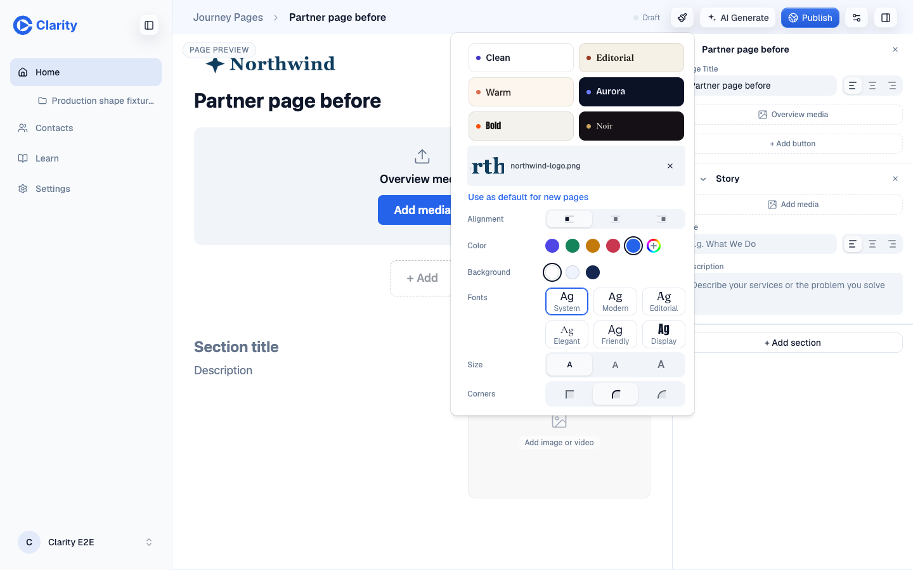
beforeBefore. A partner logo on one page. The only hint is the quiet link.
Three ways to ask
All three are drawn in the real editor on the PR preview. A and C are mockups injected into the page. B is the shipped code.
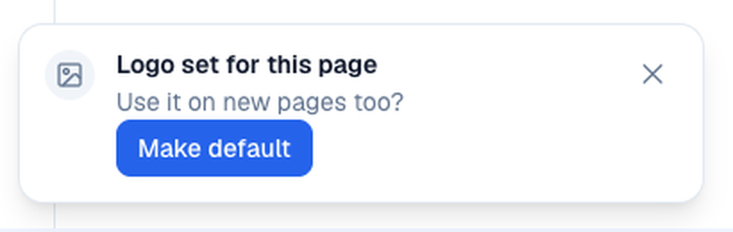
Close-up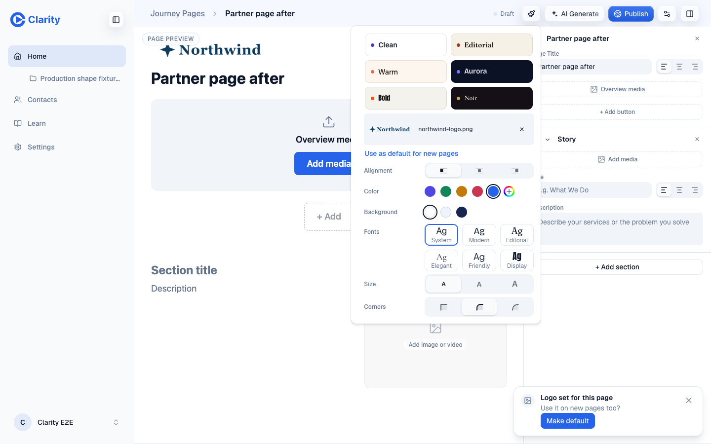
rejectedA. Toast after the pick. Shows on every logo change and times out. An action inside a toast is easy to miss and hard to reach by keyboard.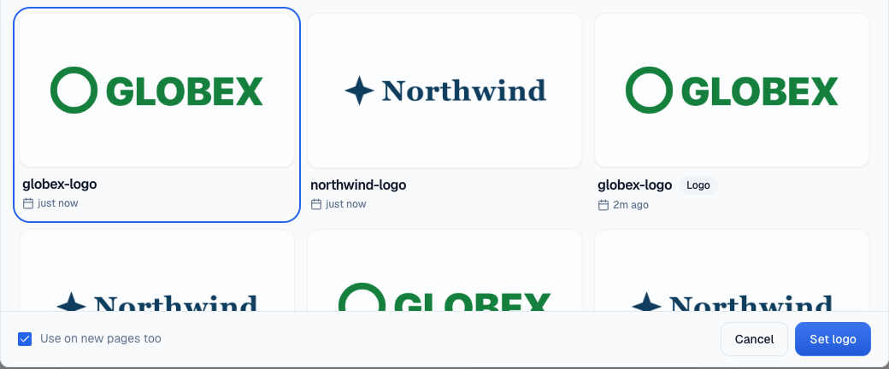
Close-up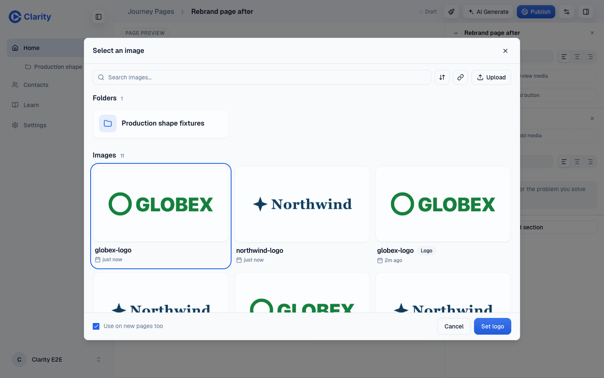
shippedB. A box in the picker footer. Asked once, inside the dialog the rep is already in. Leaving it as it is costs nothing.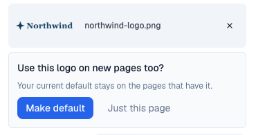
Close-up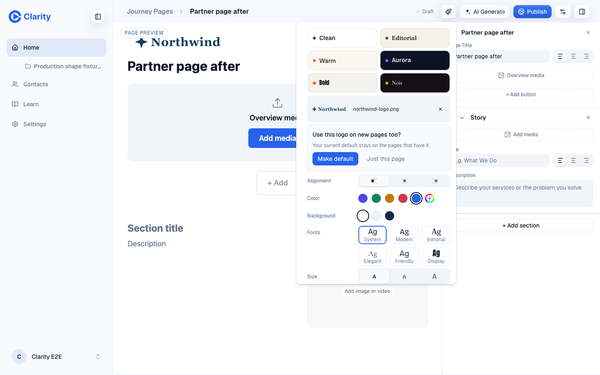
rejectedC. A card in the style panel. Unseen when the logo was changed from the page canvas, because the panel is closed then. Two buttons to get past every time.
B in use
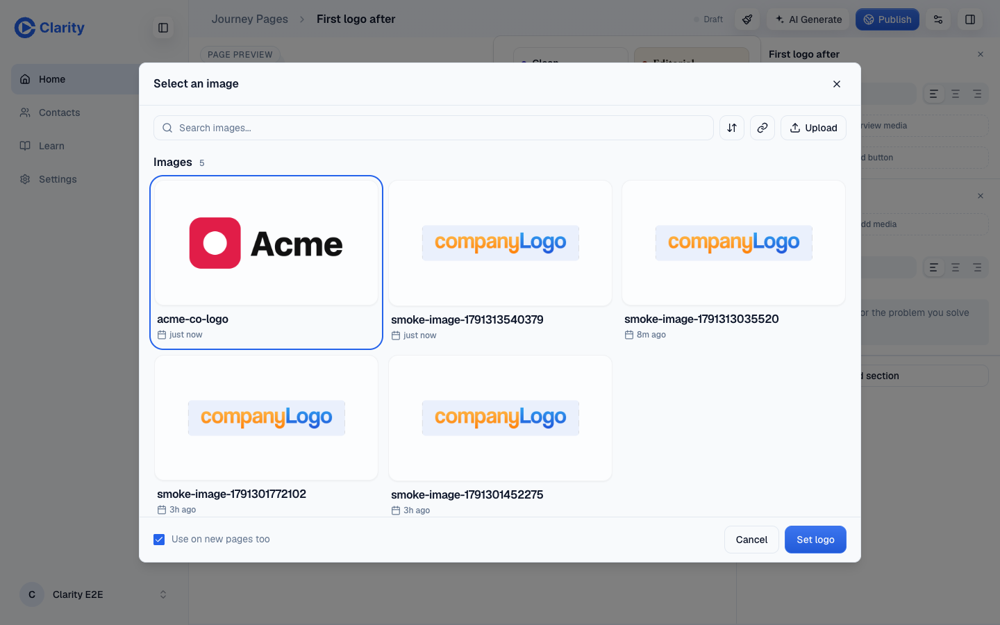
No default yet. The box starts ticked, so the first logo still becomes the default, and the rep can untick it.
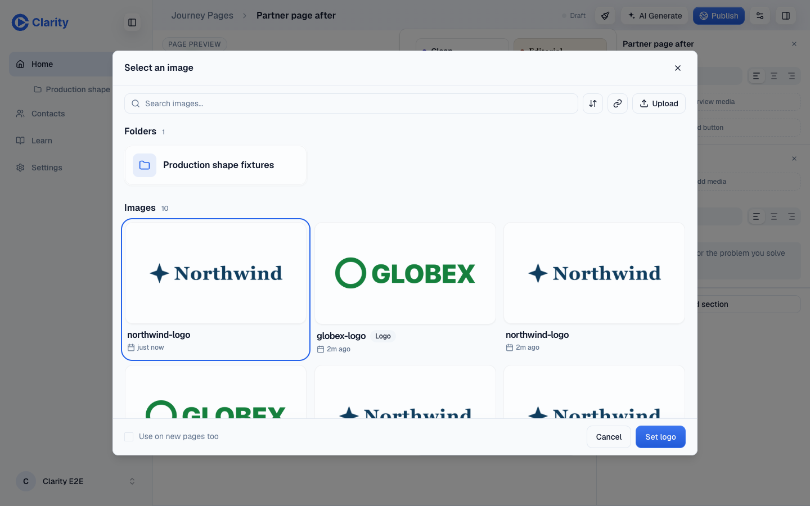
A default exists. The box starts unticked, so a partner logo stays on its page with no extra click.
Dismissed by doing nothing. The panel still offers the action later, and the thumbnail shows the whole logo.
Ticked. The new logo is the default, and the panel says so.
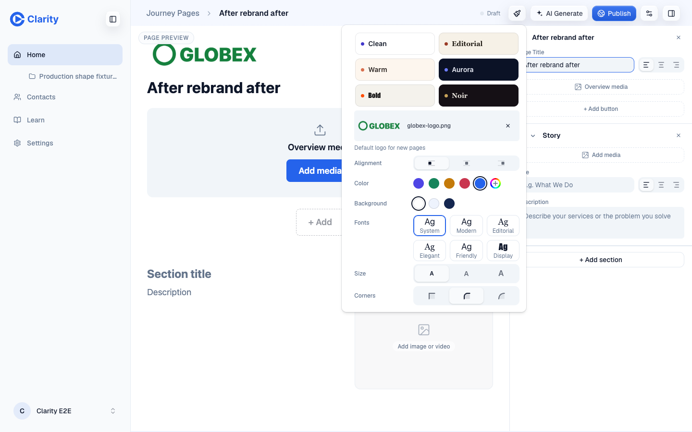
The next new page starts with it.
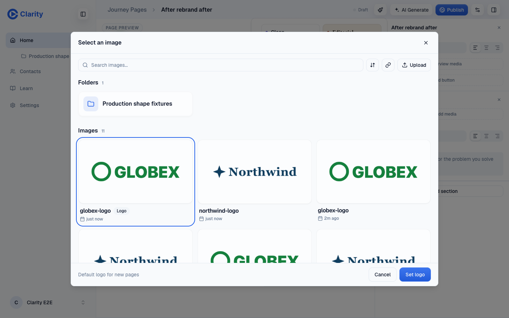
Picking the current default shows a note instead of the box.
2. Old-app logos
Settings showed a logo uploaded in the old app as the default. New pages never got it, because a page logo must be a Library image and the old logo is only a URL on the account. Settings now shows only the default that new pages copy. Bringing the old logos into the Library is a one-time backfill that needs a production write, so it is a question for you below.
Before
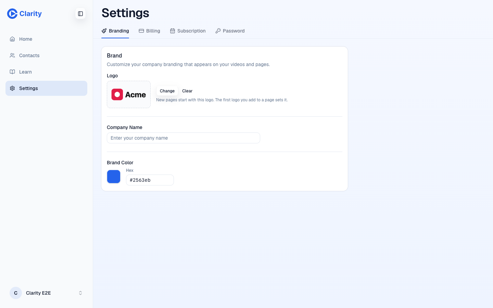
Settings claims new pages start with the old Acme logo.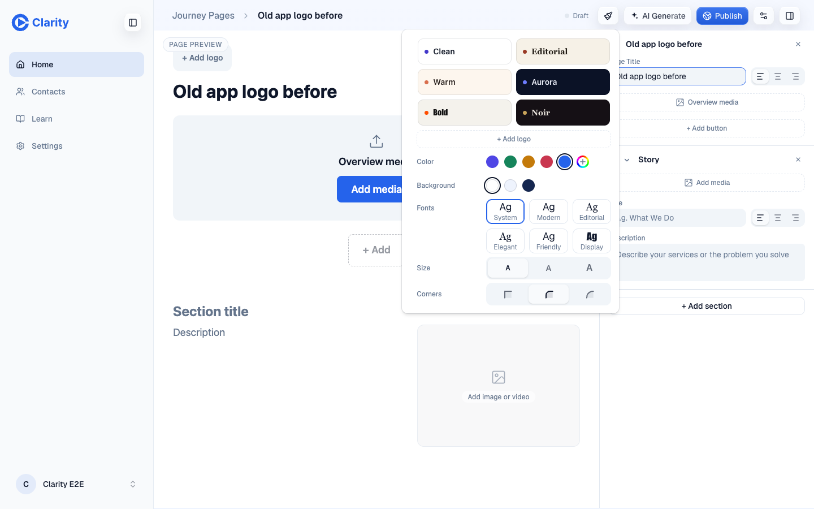
A new page from the same account has no logo.After
 Same account. Settings says new pages start without a logo, which is true.
Same account. Settings says new pages start without a logo, which is true.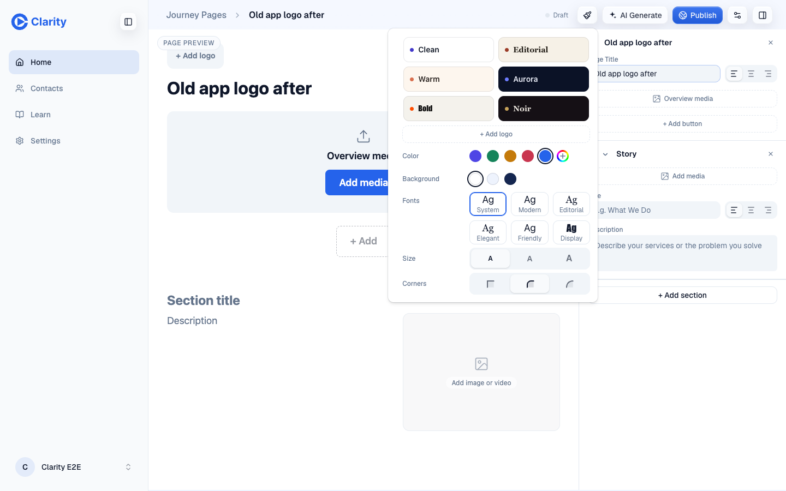
The new page matches what Settings says.Same account again, after it adds its first page logo with the box ticked. Settings and new pages agree on it.
 Settings after the first page logo.
Settings after the first page logo.
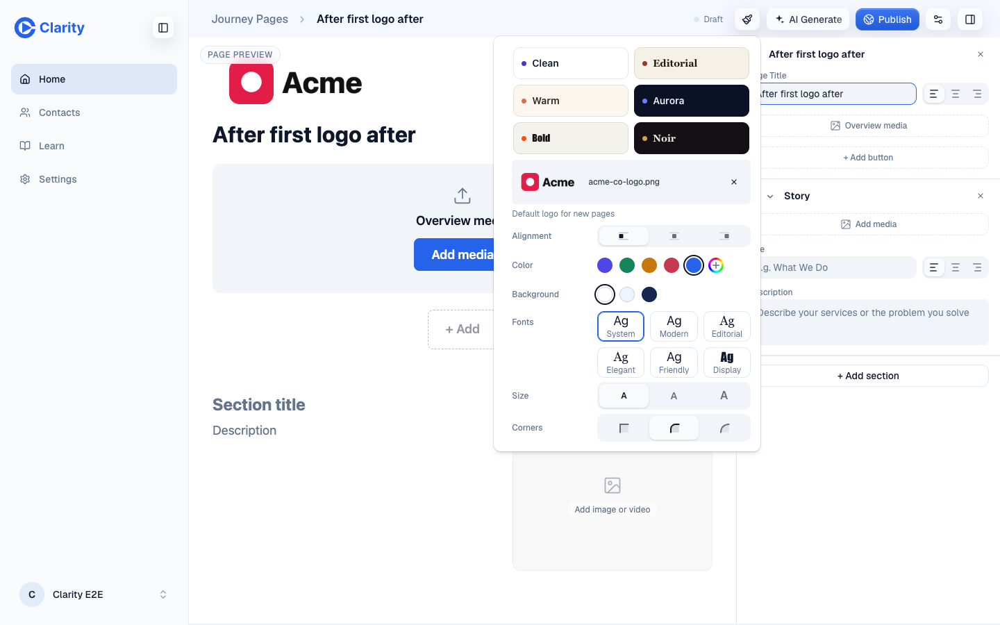
The next new page.
3. Wide logos in the style panel
The thumbnail was a square crop, so "Northwind" read as "rth". It now sizes to the logo and shows all of it.
4. Deleting the default logo image
The delete failed and sent the rep to Settings. Now the image is deleted and the workspace has no default. With no default left, the picker's box starts ticked again for the next logo, as in section 1. A unit test covers deleting a folder that holds the default; this run deletes the image itself.
After
 After. The image is gone.
After. The image is gone. Settings after the delete.
Settings after the delete.5. "Use as default" failing
A failed save only reached the console. The link and the picker box save through the same handler, which now shows the editor's error toast. This run fails the link with a simulated 500 from the browser driver.
Before
 Before. Nothing on screen.
Before. Nothing on screen.6. Two tabs adding a first logo at once
Both tabs read "no default yet", then both wrote, so the second won. The write now lands only on the row its read saw, as one conditional upsert in D1. The loser re-reads and finds the first logo chosen. Output of the new test, run once with the store from the previous PR head and once with the new one:
Before
FAIL tests/workspace-brand-adopt.test.ts > adoptBrandLogo > keeps the first logo when two tabs adopt at the same moment
AssertionError: expected 'image-2' to be 'image-1' // Object.is equality
After
✓ tests/workspace-brand-adopt.test.ts > adoptBrandLogo > selects the first page logo when there is no settings row 22ms
✓ tests/workspace-brand-adopt.test.ts > adoptBrandLogo > keeps an explicitly selected logo 22ms
✓ tests/workspace-brand-adopt.test.ts > adoptBrandLogo > keeps an explicit clear 22ms
✓ tests/workspace-brand-adopt.test.ts > adoptBrandLogo > keeps the first of two adopted logos 19ms
✓ tests/workspace-brand-adopt.test.ts > adoptBrandLogo > keeps the first logo when two tabs adopt at the same moment 19ms
✓ tests/workspace-brand-adopt.test.ts > adoptBrandLogo > adopts when a brand color save lands between its read and its write 20ms
✓ tests/workspace-brand-adopt.test.ts > adoptBrandLogo > rejects a non-image and another workspace asset 19ms
✓ tests/workspace-brand-adopt.test.ts > adoptBrandLogo > accepts adopt-logo through the browser API 45ms
Tests 8 passed (8)7. The publish script
No screenshot for this one.
Before
Every run reused one clone in /tmp/clarity-design-previews. That clone lost its HEAD, and every publish after failed with fatal: not a git repository until someone deleted it by hand. Large artifacts also needed a bigger git upload buffer.
$ bash scripts/publish-artifact.sh /tmp/pa-before-demo before-demo-should-not-publish "x"
fatal: not a git repository (or any of the parent directories): .git
fatal: not a git repository (or any of the parent directories): .git
exit=128
$ ls -a /tmp/clarity-design-previews/.git
.
..
COMMIT_EDITMSG
FETCH_HEAD
ORIG_HEAD
hooks
index
info
logs
objects
refs
After
Each run clones into its own temp directory and deletes it on exit, so there is no shared clone left to break. The clone is shallow and sparse: it fetches only the root files and this artifact. The push uses a 500 MB buffer and retries on a fresh tip if another publish landed first. This page was published by the new script while the broken /tmp clone was still on disk.
Questions for you
- Backfill the old-app logos? In an old export of the old app, 187 of 1,847 accounts had a company logo. A one-time script could turn each into a Library image and make it the default, so those reps get their logo on new pages with no click. It writes to production, so it waits for your yes.
- Warn before deleting the default? The delete now just works and clears the default. The confirm dialog could also say "This is your default logo for new pages." I left it out to keep the change small.